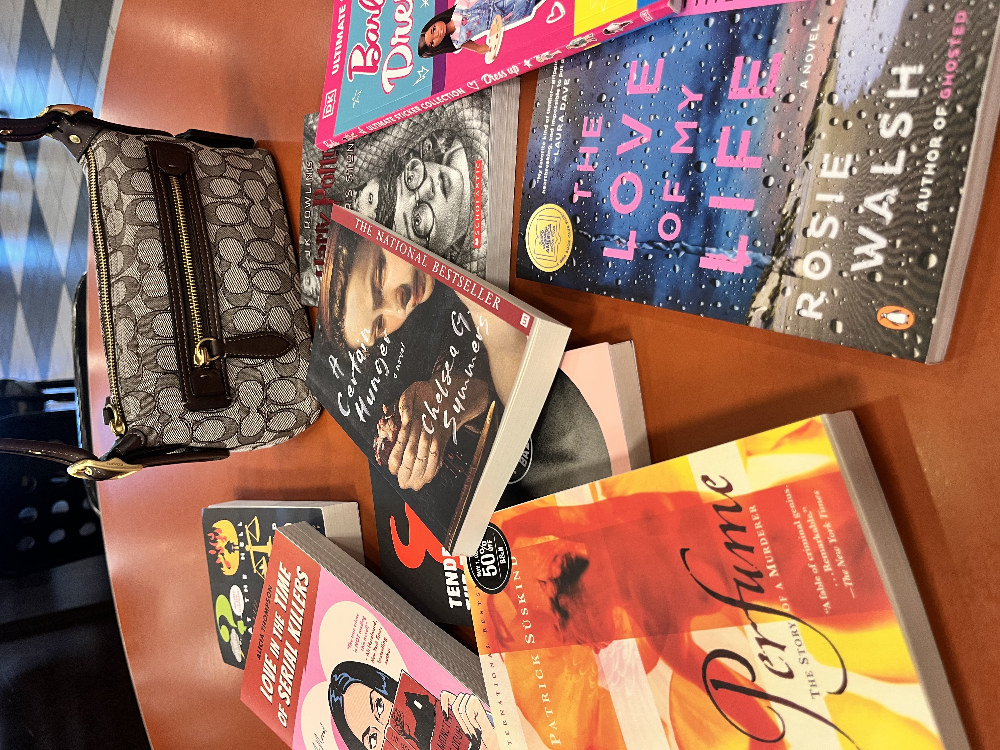

"When I'm not learning personal new tech abilities or exploring creative solutions, I'm focusing on maintaining balance through these activities:"
Reading
Reading is my escape. I love curling up in a cozy spot with a warm blanket and coffee, tea, or cocoa, depending on the mood. I’m drawn to classical fiction, stories with rich prose and characters that stick with me, like those by Hanya Yanagihara or Donna Tartt. The setting matters too. I’ll light a candle or turn on a soft lamp to create a calm, inviting vibe. For me, reading isn’t just a hobby; it’s my way of unwinding and getting lost in another world.
Collecting Coach Bags

I love collecting handbags, especially from Coach, but I also enjoy thrifting vintage finds. There’s something exciting about hunting for unique, one-of-a-kind pieces that add character to my collection. Whether it’s a timeless Coach design or a vintage gem, each bag is a stylish way to pull my outfits together.
Dinner with Friends & Family

I love spending time with family and friends over dinner or drinks, especially at new spots. There’s something so fun about trying out a fresh location with new vibes, new menus, and new memories to make. Whether it’s a cozy restaurant or a trendy bar, it’s all about good company and great experiences.